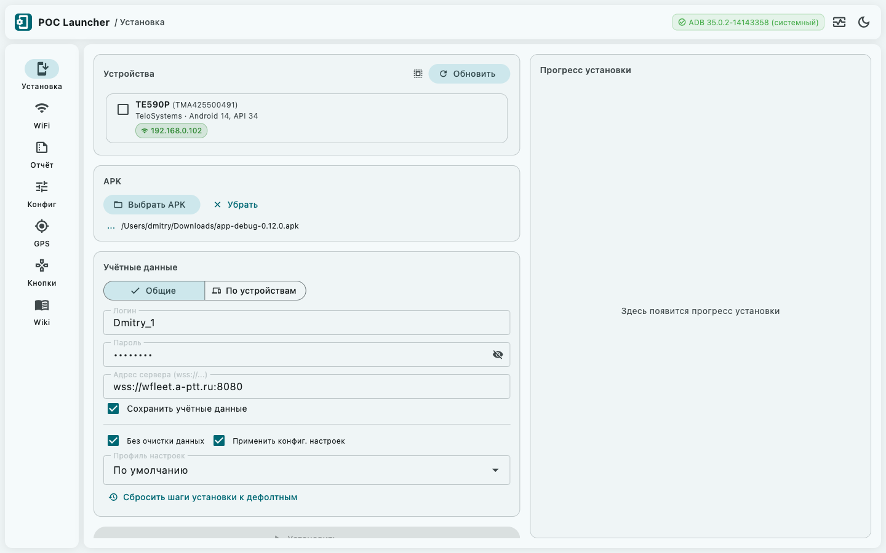
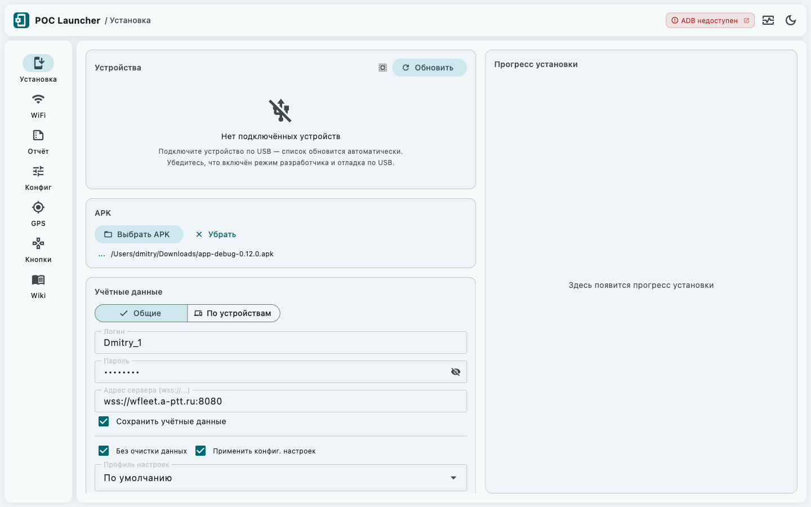
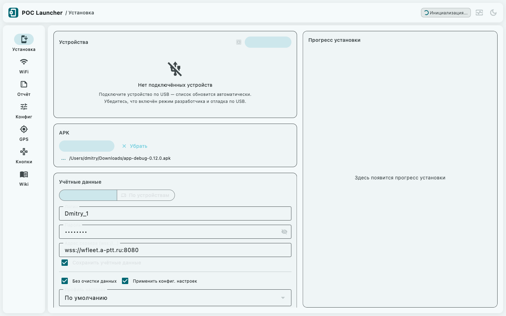
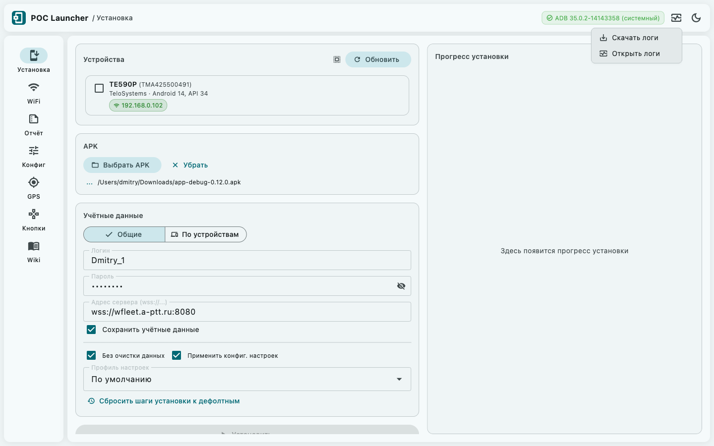
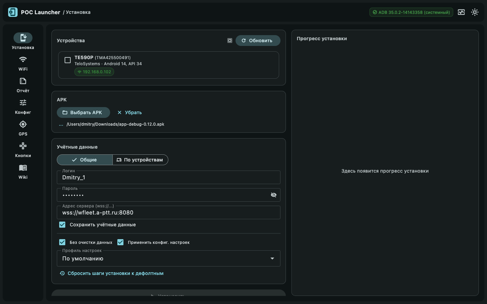

Общие элементы интерфейса
Шапка приложения присутствует на всех вкладках. Содержит ADB-статус, меню логов и переключатель темы.
Шапка приложения
Шапка расположена в верхней части окна. Слева направо: иконка и название «POC Launcher» → хлебная крошка активной вкладки → чип ADB-статуса → кнопка логов → переключатель темы.

ADB-статус
Чип в правой части шапки показывает текущее состояние ADB. Приложение ищет ADB в трёх местах при каждом запуске.
- Системный
adbиз PATH — прямой запуск. - Login shell —
zsh -l/bash -lна macOS/Linux,where.exeна Windows. Нужен при запуске через Finder или Dock, где PATH укорочен. - Встроенный бандл из
assets/bin/<platform>/— если ADB не найден нигде.
Состояния чипа
| Состояние | Вид | Когда |
|---|---|---|
| Инициализация | ⏳ спиннер · «Инициализация...» | При запуске, ADB ещё не найден |
| Готов — системный | ADB 35.0.2 (системный) | ADB найден в PATH или через shell |
| Готов — встроенный | ADB 35.0.2 (встроенный) | ADB извлечён из бандла приложения |
| Устарел | ADB X.X — устарел | Системный ADB старше бандлного. Кликабельный — открывает диалог обновления. |
| Ошибка | ADB недоступен | ADB не найден нигде. Кликабельный — открывает диалог установки. |


Что делать если ADB не найден
Нажмите на красный чип ADB недоступен — откроется диалог с двумя вариантами.
Диалог установки / обновления
Диалог содержит пошаговые инструкции для вашей операционной системы с командами для копирования.
| Платформа | Рекомендуемый способ |
|---|---|
| macOS | brew install android-platform-tools |
| Windows | Скачать ZIP с developer.android.com → распаковать → добавить в PATH |
| Linux (Debian/Ubuntu) | sudo apt install android-tools-adb |
| Linux (Fedora) | sudo dnf install android-tools |
После установки нажмите Перепроверить — приложение повторит поиск ADB и обновит статус.
Автоматическая загрузка ADB
В диалоге установки (режим «ADB не найден») доступна кнопка Скачать ADB — она загружает Android Platform Tools автоматически без ручных действий.
- Нажмите Скачать ADB.
- В диалоге подтверждения нажмите Загрузить — начнётся скачивание с прогресс-баром.
- После завершения ADB устанавливается автоматически. Диалог закрывается, статус обновляется.
Логи
Кнопка с иконкой мониторинга в шапке открывает контекстное меню с двумя пунктами. Логи содержат всю историю ADB-команд, ошибок и событий текущей сессии.

Скачать логи
Сохраняет весь лог текущей сессии в текстовый файл.
Имя файла: talker_YYYY-MM-DD_HH-MM.txt.
| Платформа | Папка | Кнопка «Открыть папку» |
|---|---|---|
| Windows | %USERPROFILE%\Downloads\poc-launcher-logs\ |
Открывает Проводник |
| Linux | ~/Downloads/poc-launcher-logs/ |
Открывает через xdg-open |
| macOS | ~/Downloads/poc-launcher-logs/ |
Открывает Finder |
- Windows:
%APPDATA%\poc_launcher\logs\ - Linux:
~/.local/share/poc_launcher/logs/ - macOS:
~/Library/Application Support/poc_launcher/logs/
Если история логов пуста — вместо файла появится snackbar «Лог пуст».
Открыть логи
Открывает полноэкранный просмотрщик с цветовой разметкой по уровням: verbose (серый), debug (синий), info (зелёный), warning (жёлтый), error (красный). Удобно для быстрой диагностики без выгрузки в файл.
Переключение темы
Кнопка с иконкой луны (тёмная тема) или солнца (светлая тема) в правом углу шапки переключает оформление одним нажатием.
- Выбор сохраняется между запусками приложения.
- При первом запуске тема определяется автоматически по системным настройкам macOS / Windows / Linux.
